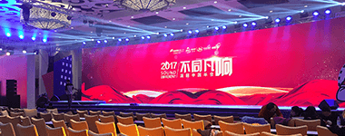
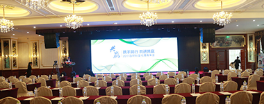

解决方案
开心大屏幕通过超100万+场次活动，为您的活动提供不同的解决方案，给你最好的惊喜

企业年会
企业年会是轻松愉快的节日派对，需要让每个人都尽情欢乐，并且充分展示自我。开心大屏幕配合设计精巧的节目环节，灵活贯穿年会流程，使年会更加精彩。
教育培训
培训总是让人昏昏欲睡？那你一定还没有试过开心大屏幕。全新互动体验，把培训变得妙趣横生，让学员主动参与课程，让师生无缝沟通，大大提高培训效果。使用一次，把学员都变成粉丝，后续卖课，营销一步到位。

会议论坛
峰会、论坛、会议类活动，往往相对正式和商务，但活动进程中也需要提高观众互动热情，使用开心大屏幕可以有效提高会议的互动性，打破沉闷的会议氛围。
展览展示
展会、展览如何吸引更多人流？如何快速聚集观众？如何加强与观众互动沟通？开心大屏幕提供完整解决方案。
相亲联谊
相亲和联谊类的活动，主办方一般希望收集参与者姓名、联系方式等信息；活动中参与者往往也需要通过主持人寻找心仪的人。通过开心大屏幕可以提供完美的解决方案。

公关活动
公关活动形式多种多样，需求也各不相同，除了上述各种活动外，开心大屏幕也广泛适用于需要现场互动、数据收集、信息跟踪等功能的各类活动。